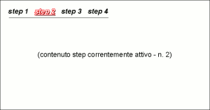

UI Panels - scheda del pannello [ WizardPanel]
WizardPanel]
In questa scheda è descritto il pannello WizardPanel, in termini di:
- riferimento alla documentazione di dettaglio dell'elemento del metamodello utilizzabile durante la modellazione
- uno o più snapshot che rappresentano graficamente il pannello
- una descrizione del pannello che ne descrive l'utilizzo e le possibili varianti
- elenco degli eventi gestibili (implicitamente o esplicitamente) relativamente al pannello
Identificativo e riferimenti di dettaglio
La documentazione metamodeldoc di dettaglio del pannello WizardPanel è disponibile
qui.
Descrizione
Il WizardPanel è un pannello utilizzato realizzare strutture organizzate
a wizard:
Prevede due sezioni visibili:
- la lista di " etichette " che servono per attivare i vari step
(con evidenza visiva dello step correntemente selezionato)
- la sezione in cui viene visualizzato il contenuto dello step corrente.
All'interno del singolo tab è possibile inserire tutte le tipologie di pannello disponibili.
Il WizardPanel può funzionare in tre differenti modalità:
- wizard passivo: la navigazione tra gli step deve essere comandata dalla business
logic (es. tasti di "avanti" o "indietro" all'interno dello step)
- wizard attivo: la navigazione tra gli step può essere comandata sia dalla
business logic (es. tasti di "avanti" o "indietro" all'interno dello step) sia
tramite click sulle etichette dei vari step.
Immagini esemplificative

fig.1 - esempio